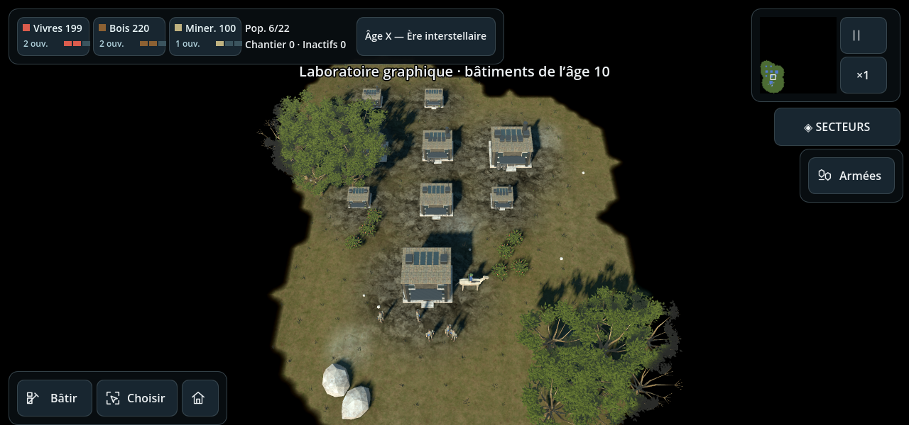
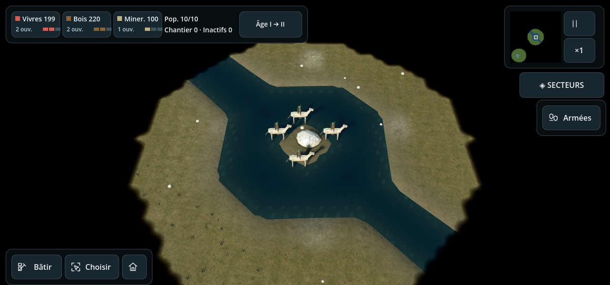
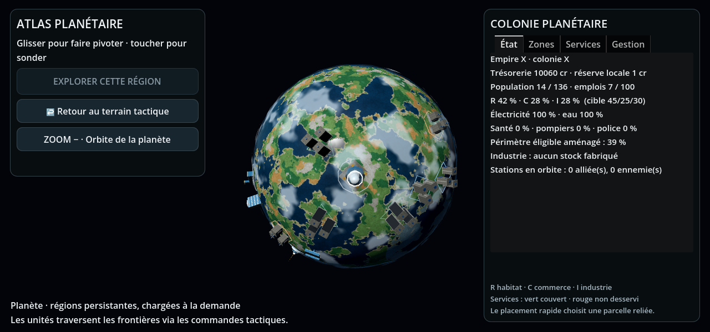
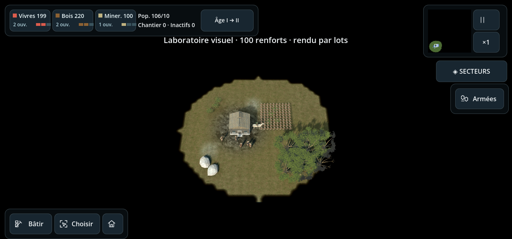

Sillons d’Empire · Réalisme 0.13.5
57 modèles supplémentaires : 44 architectures, 7 éléments naturels et 6 figures articulées. Matières PBR photographiques, lumière, eau, végétation et globe revus. Version candidate.
Images du vrai moteur Godot 4.7.2, OpenGL logiciel llvmpipe, 1280×600. 34 scénarios PASS ; 1 sonde GPU héritée SKIP en headless. Android, Vulkan mobile, APK et performances sur S25 Ultra non testés. Le photoréalisme complet n’est pas déclaré atteint.
Comparer le même départ
Déplacer le curseur : la nouvelle version apparaît à gauche. Les deux scènes sont arrêtées dans une fixture reproductible avec le même cadrage.
Village — âge IPartie normale, même cadrage que la comparaison 0.13.4.Architecture — âge VIFixture de laboratoire : bâtiments complétés pour inspection du rendu.
Architecture — âge XFixture de laboratoire : styles avancés ; aucune dotation modifiée en partie normale.
Rivière et guésEau, berges, normales animées et végétation.
Globe et colonieTexture progressive 1024 × 512, nuages et atmosphère ; colonie de laboratoire.
Armée de chargeFixture de 100 renforts ; LOD et lots régionaux. Les captures de laboratoire servent à inspecter les architectures, le globe et la charge graphique. Les règles, coûts et fichiers de simulation restent ceux de la candidate précédente.